Skin in
Three
Уход. По порядку.
Три средства превращаются в ясную ежедневную последовательность: очищение, увлажнение и защита. Номер помогает понять продукт ещё до чтения подробностей.
Сделать компактную линейку заметной и понятной.
Люди устают от длинных названий и сложных схем ухода. Новому бренду нужна система, которая различает продукты, показывает их связь и помогает выбрать конкретное средство без вымышленных обещаний эффективности.
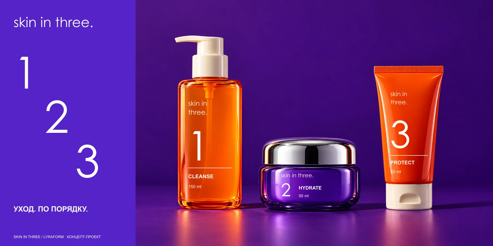
Номер всегда соседствует с действием.
CLEANSE, HYDRATE, PROTECT получают крупные номера и разные формы упаковки. Насыщенный фиолетовый объединяет линейку, мандариновый делает её заметной, а хром добавляет материальный акцент.
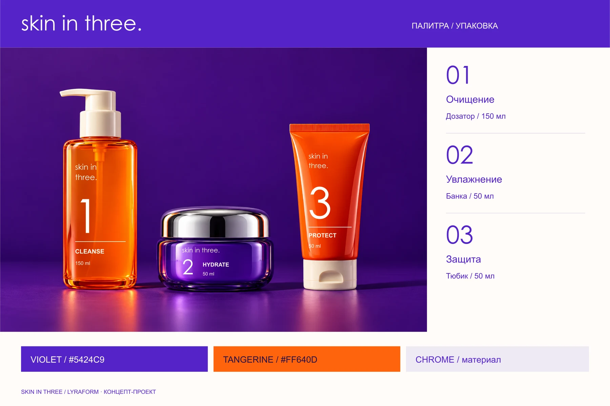
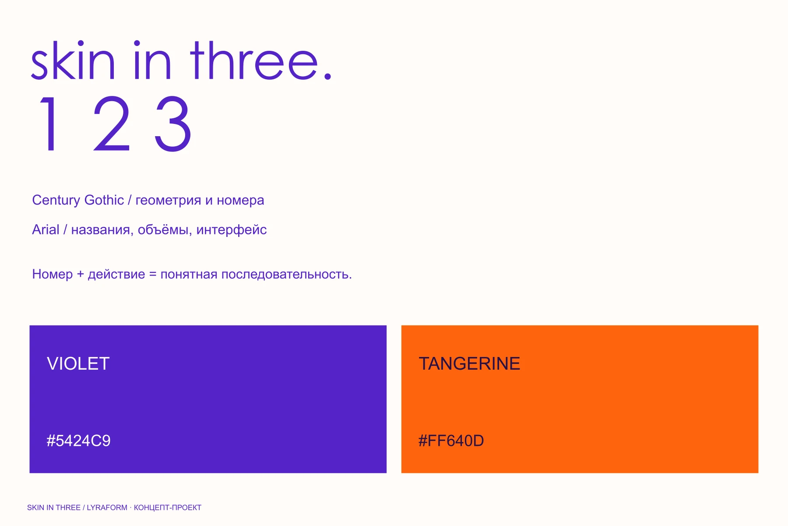
Сначала система, потом конкретный продукт.
Каталог знакомит с тремя средствами как с последовательностью. Карточка раскрывает объём, формат и текстуру, а корзина явно показывает количество, стоимость и следующий шаг без лишнего маркетингового шума.
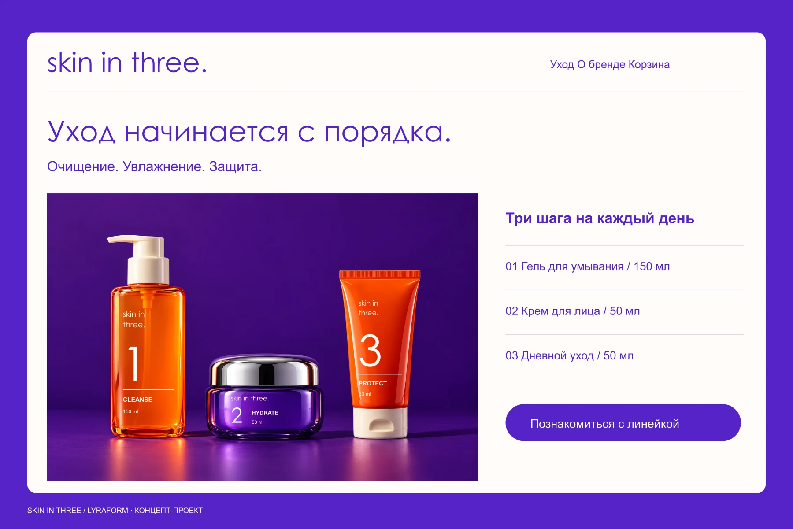
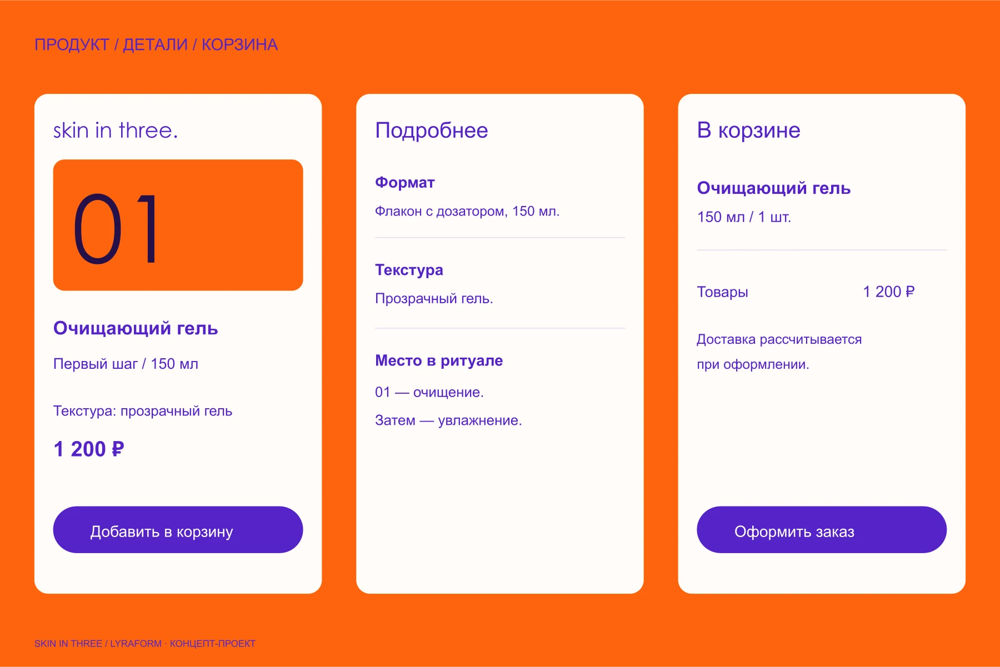
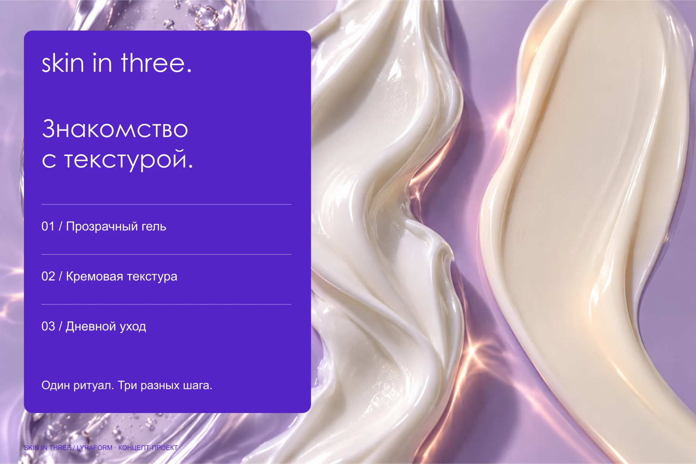
Яркая система остаётся узнаваемой без фотографии.
Крупные номера работают на флаконах, коробках, в social media и на типографических плакатах. Предметная кампания добавляет фактуру, но сама система сохраняет характер даже в чистой графике.
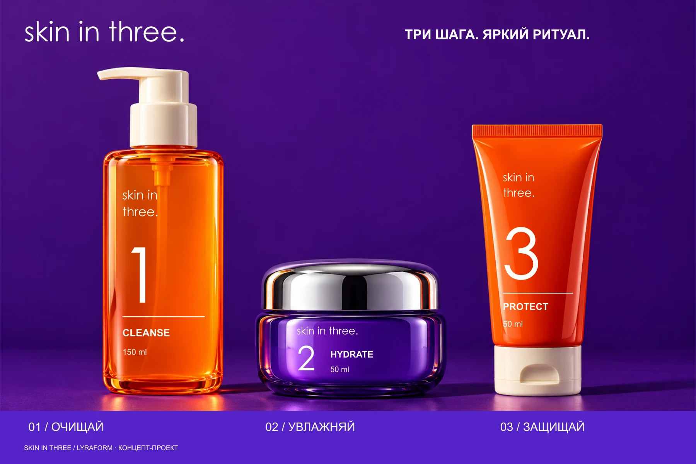
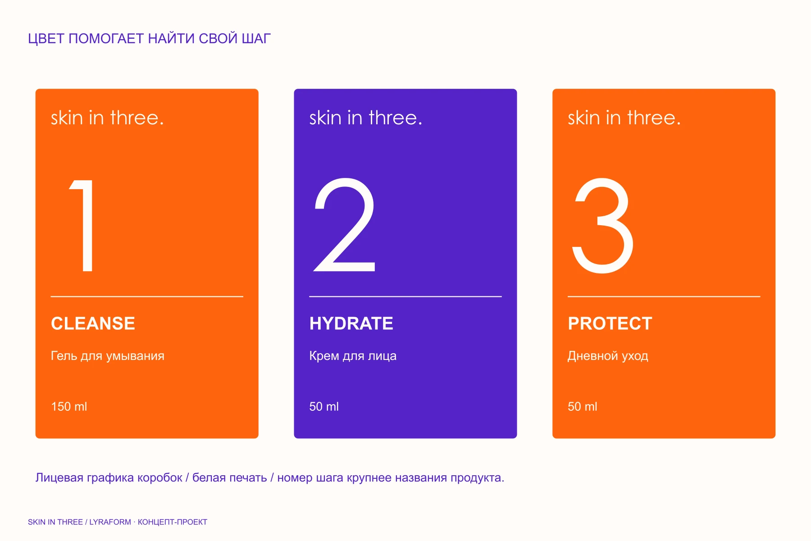
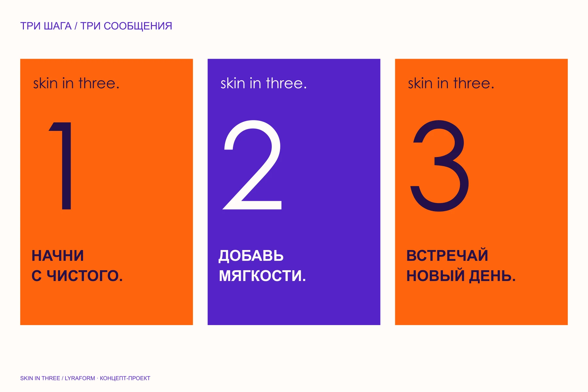
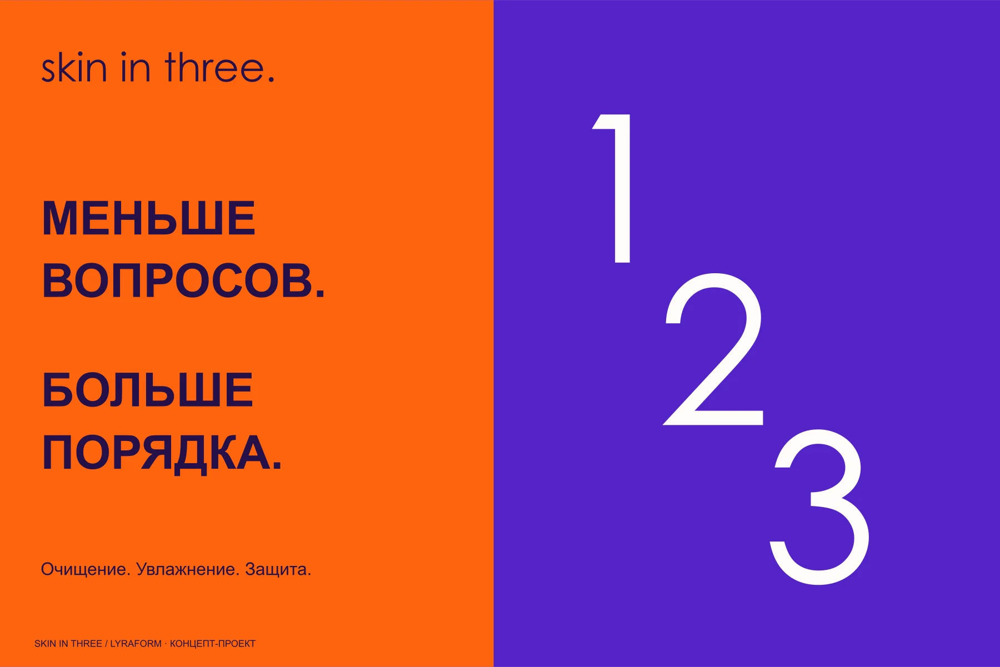
Три шага появляются по очереди и собираются в ритуал.
Номера последовательно раскрывают действия, затем становятся рядом и фиксируют название. Финальное состояние сохраняет смысл и в статичном носителе.
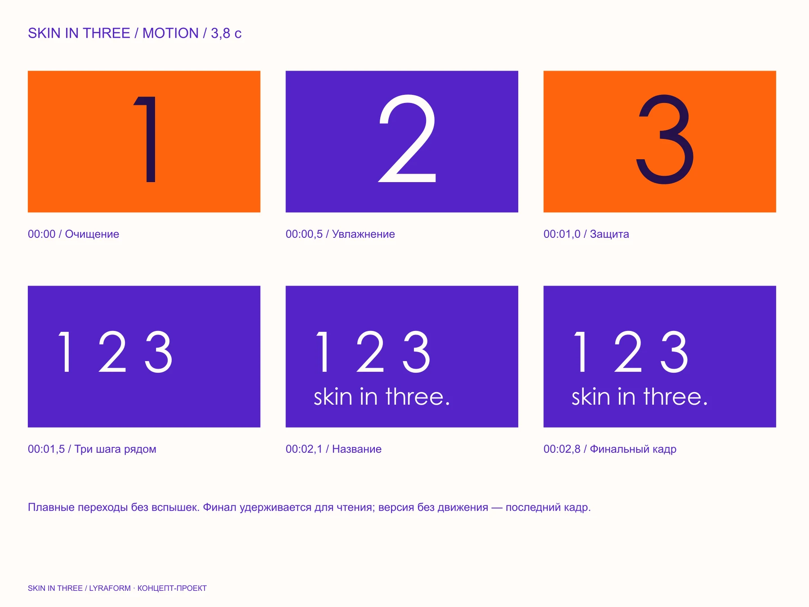
SKIN IN THREE — вымышленный концепт-проект LYRAFORM. Не заявляются реальные продажи, испытания, сертификаты или клинические эффекты. Упаковка показывает визуальную концепцию, а не готовую производственную документацию.